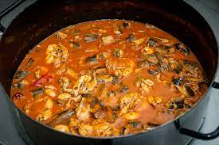

Brudet

When I hear the word Brodet, my mouth starts to water. I absolutely love this classic Dalmatian dish, and you will too!
Brodet is a seafood stew and an essential part of Croatian coastal food culture,
just like all seafood - hello Octopus Salad and Shrimp Risotto.
Ingredients
- 1.5 kg fish. We always enjoy scorpion fish, ccean perch, conger eel, reef and rockfish species the best (3lbs 5oz).
Just take what you can get that is fresh from your fishmonger
- 50 ml extra virgin olive oil (1/4 cup)
- 4 tablespoons white vinegar (more if you like)
- Six garlic cloves, sliced
- ½ bunch flat-leaf parsley, chopped
- 3 large onions, finely chopped
- ½ cup finely chopped tomatoes (more if you like)
- Salt & pepper
- 600 ml water to cover fish (2 1/2 cups)
- 12 mussels, cleaned and debearded
- 6 scampi